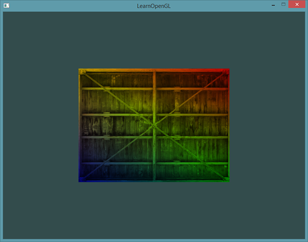
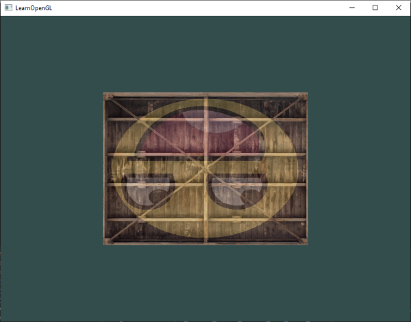
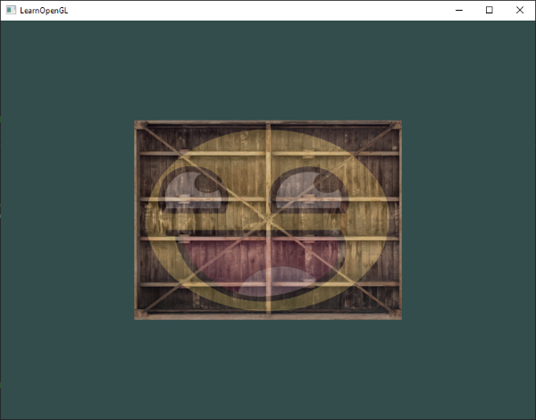

纹理
| 原文 | Textures |
|---|---|
| 作者 | JoeyDeVries |
| 翻译 | Django, Krasjet, Geequlim, BLumia |
| 校对 | AoZhang |
译注
注意，由于作者对教程做出了更新，之前本节使用的是SOIL库，但现在改为了使用stb_image.h库，关于SOIL配置的部分现在已经被修改，但我仍决定将这部分教程保留起来，放到一个历史存档中，如果有需要的话可以到这里来查看。
我们已经了解到，我们可以为每个顶点添加颜色来增加图形的细节，从而创建出有趣的图像。但是，如果想让图形看起来更真实，我们就必须有足够多的顶点，从而指定足够多的颜色。这将会产生很多额外开销，因为每个模型都会需求更多的顶点，每个顶点又需求一个颜色属性。
艺术家和程序员更喜欢使用
Important
除了图像以外，纹理也可以被用来储存大量的数据，这些数据可以发送到着色器上，但是这不是我们现在的主题。
下面你会看到之前教程的那个三角形贴上了一张砖墙图片。
{kind=link}

为了能够把纹理映射(Map)到三角形上，我们需要指定三角形的每个顶点各自对应纹理的哪个部分。这样每个顶点就会关联着一个
纹理坐标在x和y轴上，范围为0到1之间（注意我们使用的是2D纹理图像）。使用纹理坐标获取纹理颜色叫做

我们为三角形指定了3个纹理坐标点。如上图所示，我们希望三角形的左下角对应纹理的左下角，因此我们把三角形左下角顶点的纹理坐标设置为(0, 0)；同理右下方的顶点设置为(1, 0)；三角形的上顶点对应于图片的上中位置所以我们把它的纹理坐标设置为(0.5, 1.0)。我们只要给顶点着色器传递这三个纹理坐标就行了，接下来它们会被传到片段着色器中，它会为每个片段进行纹理坐标的插值。
纹理坐标看起来就像这样：
float texCoords[] = {
0.0f, 0.0f, // 左下角
1.0f, 0.0f, // 右下角
0.5f, 1.0f // 上中
};
对纹理采样的解释非常宽松，它可以采用几种不同的插值方式。所以我们需要自己告诉OpenGL该怎样对纹理采样。
纹理环绕方式
纹理坐标的范围通常是从(0, 0)到(1, 1)，那如果我们把纹理坐标设置在范围之外会发生什么？OpenGL默认的行为是重复这个纹理图像（我们基本上忽略浮点纹理坐标的整数部分），但OpenGL提供了更多的选择：
| 环绕方式 | 描述 |
|---|---|
| GL_REPEAT | 对纹理的默认行为。重复纹理图像。 |
| GL_MIRRORED_REPEAT | 和GL_REPEAT一样，但每次重复图片是镜像放置的。 |
| GL_CLAMP_TO_EDGE | 纹理坐标会被约束在0到1之间，超出的部分会重复纹理坐标的边缘，产生一种边缘被拉伸的效果。 |
| GL_CLAMP_TO_BORDER | 超出的坐标为用户指定的边缘颜色。 |
当纹理坐标超出默认范围时，每个选项都有不同的视觉效果输出。我们来看看这些纹理图像的例子：

前面提到的每个选项都可以使用s、t（如果是使用3D纹理那么还有一个r）它们和x、y、z是等价的）：
glTexParameteri(GL_TEXTURE_2D, GL_TEXTURE_WRAP_S, GL_MIRRORED_REPEAT);
glTexParameteri(GL_TEXTURE_2D, GL_TEXTURE_WRAP_T, GL_MIRRORED_REPEAT);
第一个参数指定了纹理目标；我们使用的是2D纹理，因此纹理目标是GL_TEXTURE_2D。第二个参数需要我们指定设置的选项与应用的纹理轴。我们打算配置的是WRAP选项，并且指定S和T轴。最后一个参数需要我们传递一个环绕方式(Wrapping)，在这个例子中OpenGL会给当前激活的纹理设定纹理环绕方式为GL_MIRRORED_REPEAT。
如果我们选择GL_CLAMP_TO_BORDER选项，我们还需要指定一个边缘的颜色。这需要使用fv后缀形式，用GL_TEXTURE_BORDER_COLOR作为它的选项，并且传递一个float数组作为边缘的颜色值：
float borderColor[] = { 1.0f, 1.0f, 0.0f, 1.0f };
glTexParameterfv(GL_TEXTURE_2D, GL_TEXTURE_BORDER_COLOR, borderColor);
纹理过滤
纹理坐标不依赖于分辨率(Resolution)，它可以是任意浮点值，所以OpenGL需要知道怎样将纹理像素(Texture Pixel，也叫Texel，译注1)映射到纹理坐标。当你有一个很大的物体但是纹理的分辨率很低的时候这就变得很重要了。你可能已经猜到了，OpenGL也有对于
译注1
Texture Pixel也叫Texel，你可以想象你打开一张.jpg格式图片，不断放大你会发现它是由无数像素点组成的，这个点就是纹理像素；注意不要和纹理坐标搞混，纹理坐标是你给模型顶点设置的那个数组，OpenGL以这个顶点的纹理坐标数据去查找纹理图像上的像素，然后进行采样提取纹理像素的颜色。
GL_NEAREST（也叫

GL_LINEAR（也叫

那么这两种纹理过滤方式有怎样的视觉效果呢？让我们看看在一个很大的物体上应用一张低分辨率的纹理会发生什么吧（纹理被放大了，每个纹理像素都能看到）：

GL_NEAREST产生了颗粒状的图案，我们能够清晰看到组成纹理的像素，而GL_LINEAR能够产生更平滑的图案，很难看出单个的纹理像素。GL_LINEAR可以产生更真实的输出，但有些开发者更喜欢8-bit风格，所以他们会用GL_NEAREST选项。
当进行
glTexParameteri(GL_TEXTURE_2D, GL_TEXTURE_MIN_FILTER, GL_NEAREST);
glTexParameteri(GL_TEXTURE_2D, GL_TEXTURE_MAG_FILTER, GL_LINEAR);
多级渐远纹理
想象一下，假设我们有一个包含着上千物体的大房间，每个物体上都有纹理。有些物体会很远，但其纹理会拥有与近处物体同样高的分辨率。由于远处的物体可能只产生很少的片段，OpenGL从高分辨率纹理中为这些片段获取正确的颜色值就很困难，因为它需要对一个跨过纹理很大部分的片段只拾取一个纹理颜色。在小物体上这会产生不真实的感觉，更不用说对它们使用高分辨率纹理浪费内存的问题了。
OpenGL使用一种叫做

手工为每个纹理图像创建一系列多级渐远纹理很麻烦，幸好OpenGL有一个
在渲染中切换多级渐远纹理级别(Level)时，OpenGL在两个不同级别的多级渐远纹理层之间会产生不真实的生硬边界。就像普通的纹理过滤一样，切换多级渐远纹理级别时你也可以在两个不同多级渐远纹理级别之间使用NEAREST和LINEAR过滤。为了指定不同多级渐远纹理级别之间的过滤方式，你可以使用下面四个选项中的一个代替原有的过滤方式：
| 过滤方式 | 描述 |
|---|---|
| GL_NEAREST_MIPMAP_NEAREST | 使用最邻近的多级渐远纹理来匹配像素大小，并使用邻近插值进行纹理采样 |
| GL_LINEAR_MIPMAP_NEAREST | 使用最邻近的多级渐远纹理级别，并使用线性插值进行采样 |
| GL_NEAREST_MIPMAP_LINEAR | 在两个最匹配像素大小的多级渐远纹理之间进行线性插值，使用邻近插值进行采样 |
| GL_LINEAR_MIPMAP_LINEAR | 在两个邻近的多级渐远纹理之间使用线性插值，并使用线性插值进行采样 |
就像纹理过滤一样，我们可以使用
glTexParameteri(GL_TEXTURE_2D, GL_TEXTURE_MIN_FILTER, GL_LINEAR_MIPMAP_LINEAR);
glTexParameteri(GL_TEXTURE_2D, GL_TEXTURE_MAG_FILTER, GL_LINEAR);
一个常见的错误是，将放大过滤的选项设置为多级渐远纹理过滤选项之一。这样没有任何效果，因为多级渐远纹理主要是使用在纹理被缩小的情况下的：纹理放大不会使用多级渐远纹理，为放大过滤设置多级渐远纹理的选项会产生一个GL_INVALID_ENUM错误代码。
加载与创建纹理
使用纹理之前要做的第一件事是把它们加载到我们的应用中。纹理图像可能被储存为各种各样的格式，每种都有自己的数据结构和排列，所以我们如何才能把这些图像加载到应用中呢？一个解决方案是选一个需要的文件格式，比如.PNG，然后自己写一个图像加载器，把图像转化为字节序列。写自己的图像加载器虽然不难，但仍然挺麻烦的，而且如果要支持更多文件格式呢？你就不得不为每种你希望支持的格式写加载器了。
另一个解决方案也许是一种更好的选择，使用一个支持多种流行格式的图像加载库来为我们解决这个问题。比如说我们要用的stb_image.h库。
stb_image.h
stb_image.h是Sean Barrett的一个非常流行的单头文件图像加载库，它能够加载大部分流行的文件格式，并且能够很简单得整合到你的工程之中。stb_image.h可以在这里下载。下载这一个头文件，将它以stb_image.h的名字加入你的工程，并另创建一个新的C++文件，输入以下代码：
#define STB_IMAGE_IMPLEMENTATION
#include "stb_image.h"
通过定义STB_IMAGE_IMPLEMENTATION，预处理器会修改头文件，让其只包含相关的函数定义源码，等于是将这个头文件变为一个 .cpp 文件了。现在只需要在你的程序中包含stb_image.h并编译就可以了。
下面的教程中，我们会使用一张木箱的图片。要使用stb_image.h加载图片，我们需要使用它的
{kind=link}
int width, height, nrChannels;
unsigned char *data = stbi_load("container.jpg", &width, &height, &nrChannels, 0);
这个函数首先接受一个图像文件的位置作为输入。接下来它需要三个int作为它的第二、第三和第四个参数，stb_image.h将会用图像的宽度、高度和颜色通道的个数填充这三个变量。我们之后生成纹理的时候会用到的图像的宽度和高度的。
生成纹理
和之前生成的OpenGL对象一样，纹理也是使用ID引用的。让我们来创建一个：
unsigned int texture;
glGenTextures(1, &texture);
unsigned int数组中（我们的例子中只是单独的一个unsigned int），就像其他对象一样，我们需要绑定它，让之后任何的纹理指令都可以配置当前绑定的纹理：
glBindTexture(GL_TEXTURE_2D, texture);
现在纹理已经绑定了，我们可以使用前面载入的图片数据生成一个纹理了。纹理可以通过
glTexImage2D(GL_TEXTURE_2D, 0, GL_RGB, width, height, 0, GL_RGB, GL_UNSIGNED_BYTE, data);
glGenerateMipmap(GL_TEXTURE_2D);
函数很长，参数也不少，所以我们一个一个地讲解：
- 第一个参数指定了纹理目标(Target)。设置为GL_TEXTURE_2D意味着会生成与当前绑定的纹理对象在同一个目标上的纹理（任何绑定到GL_TEXTURE_1D和GL_TEXTURE_3D的纹理不会受到影响）。
- 第二个参数为纹理指定多级渐远纹理的级别，如果你希望单独手动设置每个多级渐远纹理的级别的话。这里我们填0，也就是基本级别。
- 第三个参数告诉OpenGL我们希望把纹理储存为何种格式。我们的图像只有
RGB值，因此我们也把纹理储存为RGB值。 - 第四个和第五个参数设置最终的纹理的宽度和高度。我们之前加载图像的时候储存了它们，所以我们使用对应的变量。
- 下个参数应该总是被设为
0（历史遗留的问题）。 - 第七第八个参数定义了源图的格式和数据类型。我们使用RGB值加载这个图像，并把它们储存为
char(byte)数组，我们将会传入对应值。 - 最后一个参数是真正的图像数据。
当调用
生成了纹理和相应的多级渐远纹理后，释放图像的内存是一个很好的习惯。
stbi_image_free(data);
生成一个纹理的过程应该看起来像这样：
unsigned int texture;
glGenTextures(1, &texture);
glBindTexture(GL_TEXTURE_2D, texture);
// 为当前绑定的纹理对象设置环绕、过滤方式
glTexParameteri(GL_TEXTURE_2D, GL_TEXTURE_WRAP_S, GL_REPEAT);
glTexParameteri(GL_TEXTURE_2D, GL_TEXTURE_WRAP_T, GL_REPEAT);
glTexParameteri(GL_TEXTURE_2D, GL_TEXTURE_MIN_FILTER, GL_LINEAR);
glTexParameteri(GL_TEXTURE_2D, GL_TEXTURE_MAG_FILTER, GL_LINEAR);
// 加载并生成纹理
int width, height, nrChannels;
unsigned char *data = stbi_load("container.jpg", &width, &height, &nrChannels, 0);
if (data)
{
glTexImage2D(GL_TEXTURE_2D, 0, GL_RGB, width, height, 0, GL_RGB, GL_UNSIGNED_BYTE, data);
glGenerateMipmap(GL_TEXTURE_2D);
}
else
{
std::cout << "Failed to load texture" << std::endl;
}
stbi_image_free(data);
应用纹理
后面的这部分我们会使用
float vertices[] = {
// ---- 位置 ---- ---- 颜色 ---- - 纹理坐标 -
0.5f, 0.5f, 0.0f, 1.0f, 0.0f, 0.0f, 1.0f, 1.0f, // 右上
0.5f, -0.5f, 0.0f, 0.0f, 1.0f, 0.0f, 1.0f, 0.0f, // 右下
-0.5f, -0.5f, 0.0f, 0.0f, 0.0f, 1.0f, 0.0f, 0.0f, // 左下
-0.5f, 0.5f, 0.0f, 1.0f, 1.0f, 0.0f, 0.0f, 1.0f // 左上
};
由于我们添加了一个额外的顶点属性，我们必须告诉OpenGL我们新的顶点格式：

glVertexAttribPointer(2, 2, GL_FLOAT, GL_FALSE, 8 * sizeof(float), (void*)(6 * sizeof(float)));
glEnableVertexAttribArray(2);
注意，我们同样需要调整前面两个顶点属性的步长参数为8 * sizeof(float)。
接着我们需要调整顶点着色器使其能够接受顶点坐标为一个顶点属性，并把坐标传给片段着色器：
#version 330 core
layout (location = 0) in vec3 aPos;
layout (location = 1) in vec3 aColor;
layout (location = 2) in vec2 aTexCoord;
out vec3 ourColor;
out vec2 TexCoord;
void main()
{
gl_Position = vec4(aPos, 1.0);
ourColor = aColor;
TexCoord = aTexCoord;
}
片段着色器应该接下来会把输出变量TexCoord作为输入变量。
片段着色器也应该能访问纹理对象，但是我们怎样能把纹理对象传给片段着色器呢？GLSL有一个供纹理对象使用的内建数据类型，叫做sampler1D、sampler3D，或在我们的例子中的sampler2D。我们可以简单声明一个uniform sampler2D把一个纹理添加到片段着色器中，稍后我们会把纹理赋值给这个uniform。
#version 330 core
out vec4 FragColor;
in vec3 ourColor;
in vec2 TexCoord;
uniform sampler2D ourTexture;
void main()
{
FragColor = texture(ourTexture, TexCoord);
}
我们使用GLSL内建的
现在只剩下在调用
glBindTexture(GL_TEXTURE_2D, texture);
glBindVertexArray(VAO);
glDrawElements(GL_TRIANGLES, 6, GL_UNSIGNED_INT, 0);
如果你跟着这个教程正确地做完了，你会看到下面的图像：

如果你的矩形是全黑或全白的你可能在哪儿做错了什么。检查你的着色器日志，并尝试对比一下源码。
Attention
如果你的纹理代码不能正常工作或者显示是全黑，请继续阅读，并一直跟进我们的代码到最后的例子，它是应该能够工作的。在一些驱动中，必须要对每个采样器uniform都附加上纹理单元才可以，这个会在下面介绍。
我们还可以把得到的纹理颜色与顶点颜色混合，来获得更有趣的效果。我们只需把纹理颜色与顶点颜色在片段着色器中相乘来混合二者的颜色：
FragColor = texture(ourTexture, TexCoord) * vec4(ourColor, 1.0);
最终的效果应该是顶点颜色和纹理颜色的混合色：

我猜你会说我们的箱子喜欢跳70年代的迪斯科。
纹理单元
你可能会奇怪为什么sampler2D变量是个uniform，我们却不用
纹理单元的主要目的是让我们在着色器中可以使用多于一个的纹理。通过把纹理单元赋值给采样器，我们可以一次绑定多个纹理，只要我们首先激活对应的纹理单元。就像
glActiveTexture(GL_TEXTURE0); // 在绑定纹理之前先激活纹理单元
glBindTexture(GL_TEXTURE_2D, texture);
激活纹理单元之后，接下来的glBindTexture的时候，无需激活任何纹理单元。
Important
OpenGL至少保证有16个纹理单元供你使用，也就是说你可以激活从GL_TEXTURE0到GL_TEXTRUE15。它们都是按顺序定义的，所以我们也可以通过GL_TEXTURE0 + 8的方式获得GL_TEXTURE8，这在当我们需要循环一些纹理单元的时候会很有用。
我们仍然需要编辑片段着色器来接收另一个采样器。这应该相对来说非常直接了：
#version 330 core
...
uniform sampler2D texture1;
uniform sampler2D texture2;
void main()
{
FragColor = mix(texture(texture1, TexCoord), texture(texture2, TexCoord), 0.2);
}
最终输出颜色现在是两个纹理的结合。GLSL内建的0.0，它会返回第一个输入；如果是1.0，会返回第二个输入值。0.2会返回80%的第一个输入颜色和20%的第二个输入颜色，即返回两个纹理的混合色。
我们现在需要载入并创建另一个纹理；你应该对这些步骤很熟悉了。记得创建另一个纹理对象，载入图片，使用
{kind=link}
unsigned char *data = stbi_load("awesomeface.png", &width, &height, &nrChannels, 0);
if (data)
{
glTexImage2D(GL_TEXTURE_2D, 0, GL_RGB, width, height, 0, GL_RGBA, GL_UNSIGNED_BYTE, data);
glGenerateMipmap(GL_TEXTURE_2D);
}
注意，我们现在要读取一张包含alpha（透明度）通道的.png图片，这意味着我们现在需要使用GL_RGBA参数，指定该图片数据包含了alpha通道；否则OpenGL将无法正确解析图片数据。
为了使用第二个纹理（以及第一个），我们必须改变一点渲染流程，先绑定两个纹理到对应的纹理单元，然后定义哪个uniform采样器对应哪个纹理单元：
glActiveTexture(GL_TEXTURE0);
glBindTexture(GL_TEXTURE_2D, texture1);
glActiveTexture(GL_TEXTURE1);
glBindTexture(GL_TEXTURE_2D, texture2);
glBindVertexArray(VAO);
glDrawElements(GL_TRIANGLES, 6, GL_UNSIGNED_INT, 0);
我们还要通过使用
ourShader.use(); // 不要忘记在设置uniform变量之前激活着色器程序！
glUniform1i(glGetUniformLocation(ourShader.ID, "texture1"), 0); // 手动设置
ourShader.setInt("texture2", 1); // 或者使用着色器类设置
while(...)
{
[...]
}
通过使用

你可能注意到纹理上下颠倒了！这是因为OpenGL要求y轴0.0坐标是在图片的底部的，但是图片的y轴0.0坐标通常在顶部。很幸运，stb_image.h能够在图像加载时帮助我们翻转y轴，只需要在加载任何图像前加入以下语句即可：
stbi_set_flip_vertically_on_load(true);
在让stb_image.h在加载图片时翻转y轴之后你就应该能够获得下面的结果了：

如果你看到了一个开心的箱子，你就做对了。你可以对比一下源代码。
练习
为了更熟练地使用纹理，建议在继续之后的学习之前做完这些练习：
{kind=link}